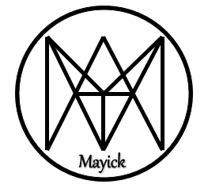

Recurso Educativo Mayick
Recurso Educativo Mayick
Recurso Educativo Mayick

Bienvenidos al Recurso Educativo Mayick, este recurso ha sido creado con la finalidad de aportar a los conocimientos de los estudiantes facilitando su proceso de enseñanza - aprendizaje, es decir, este recurso ayuda a que los estudiantes comprendan los temas del sector primario de la economía de una mejor manera.
Unidad Educativa "Juan Montalvo"
Provincia: Azuay
Cantón: Cuenca
Dirección de ubicación: JUAN LA VALLE SN CAPITAL RICAURTE
Régimen: Sierra
Zonal: Zonal 6
Área: Urbana
Tipo de educación: Educación Regular
Modalidad: Presencial
Jornada: Matutina y Vespertina
Nivel educativo que ofrece: EGB y Bachillerato
Conocimientos previos
- Uso de dispositivos electrónicos (computadores, celulares, tablets, etc.).
- Conocer sobre las actividades del sector primario de la economía (agricultura, ganadería, pesca y minería).
- Conocer dónde se pueden adquirir los productos que se obtienen del sector primario.
- Conocer de productos que han llegado directamente del productor.
Obra publicada con Licencia Creative Commons Reconocimiento No comercial Compartir igual 4.0